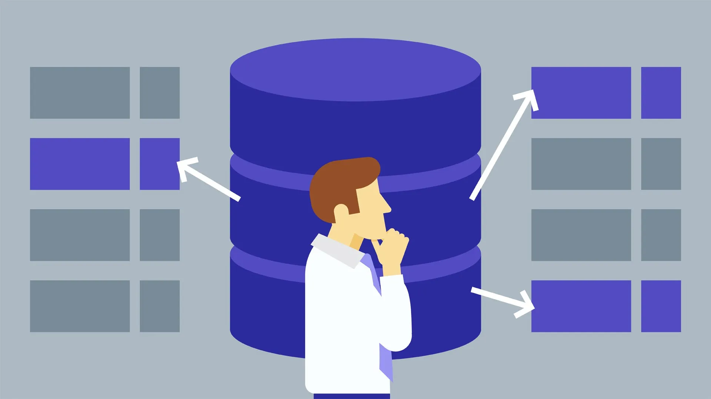

Livrables du Projet

Livrable 0 : Organisation du projet
Présentation de l’équipe projet, reformulation du besoin, organisation et planification générale.
Télécharger
Livrable 1 : Modélisation des données
Dictionnaire de données, MCD, MLD, MPD et arbres algébriques des requêtes.
TéléchargerLivrable 2 : Requêtes SQL et Base de données
Requêtes SQL, explications sur la génération et le peuplement de la base de données.
Télécharger
Soutenance Finale
Présentation en anglais de la solution finale avec démonstration de la base de données.
Télécharger